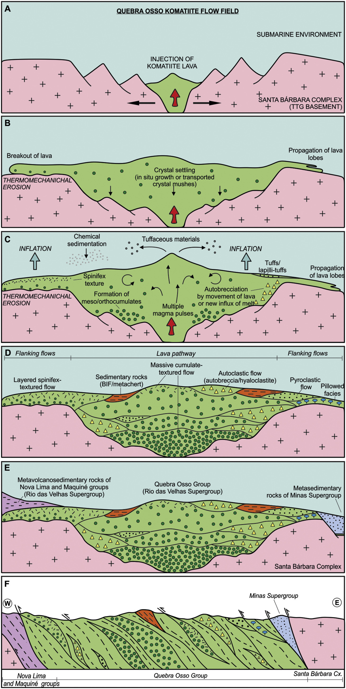

Physical volcanalogy and petrogenesis of the Archean Quebra Osso koatiite flow field, Rio das Velhas greenstone belt, Quadrilátero Ferrífero (Brazil)

Resumo em Português
O campo de fluxos de komatiito do Grupo Quebra Osso faz parte do greenstone belt Rio das Velhas (2,9–2,7 Ga), na Província do Quadrilátero Ferrífero, localizada no sul do Cráton São Francisco (Brasil). É composto principalmente por komatiitos metamorfizados com associação subordinada de rochas piroclásticas e metassedimentares. Por meio de estudo detalhado e sistemático, os fluxos de komatiito foram subdivididos em fácies coerentes (maciça, laminada e almofadada) e fácies autoclásticas (autobrechas e hialoclastitos), formadas por fluxos efusivos, e fácies piroclásticas subordinadas (tufos e lapili-tufos) relacionadas a fluxos explosivos. As texturas ígneas ainda estão preservadas, embora seus minerais primários (olivina e piroxênio) tenham sido completamente pseudomorfizados por serpentina e/ou clorita. A grande proporção de komatiitos do Grupo Quebra Osso é maciça e de textura cumulática, sugerindo sistemas de fluxo canalizados. Os fluxos laminados são subordinados e englobam uma zona superior de spinifex aleatório que gradua para uma zona inferior cumulática. A ocorrência de lavas almofadadas, hialoclastitos e sedimentos químicos indica que as lavas erupcionaram em ambiente submarino. A abundância de autobrechas e rochas híbridas locais aponta para a percolação turbulenta de komatiitos e/ou múltiplos influxos de fundidos que causaram a fragmentação da lava solidificada e mistura/mingling de magma. Os komatiitos estudados foram variadamente afetados por hidratação devido à alteração de fundo oceânico, metamorfismo regional e alteração hidrotermal, com assembleia mineral secundária composta por serpentina (principalmente antigorita), clorita, tremolita, talco, carbonato e minerais opacos como fases acessórias. A química dos cromitos sugere sobreposição metamórfica de até fácies anfibolito inferior. Alguns komatiitos são enriquecidos em ETRL (La, Sm, Nd), Rb, Ba, Th, Zr, Ti e Y, com baixo [Nb/Th]MN, sugerindo contaminação por crosta continental. O modelo de fusão parcial para a composição em ETRP refere-se a 50% de fusão em lote de uma fonte isenta de granada com composição similar ao manto pirolítico. A formação das lavas de komatiito do Grupo Quebra Osso está associada à ascensão de uma pluma mantélica que foi subsequentemente erupcionada sobre a crosta siálica Arqueana do Complexo Santa Bárbara e posteriormente retrabalhada por eventos metamórficos e deformacionais subsequentes.